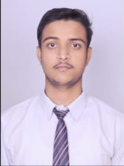

+91-8707497423
|  | A highly motivated and organized professional with excellent teamwork, communication and interpersonal skills. Proven ability to effectively coordinate tasks and prioritize work. Possess strong problem-solving and analytical skills. Experienced in working collaboratively with a diverse range of people. Seeking an opportunity to leverage my experience and knowledge for organizational growth. And I would like to get an opportunity where I can make the best of my potential and contribute to the organizational goal. |
I am currently pursuing a Bachelor of Technology in Computer Science Engineering with an aim of acquiring the skill sets to become a successful software engineer. I am actively engaging in the learning process by gathering the essential computer science fundamentals. This will equip me with the necessary knowledge base to embark on my career as a software engineer.
I achieved success in my Intermediate level studies from Onkar Nath Dhawan Inter College with a science major in the year 2019. Demonstrating strong academic capabilities, I effectively completed my Intermediate studies. My achievements include excelling in physics, chemistry, and mathematics while also obtaining a thorough understanding of various scientific concepts. The strong foundation of knowledge and understanding I acquired during my Intermediate studies will be invaluable as I progress to the next level of my educational journey.
I successfully completed my High School (10th) from Onkar Nath Dhawan Inter College, with an emphasis on Science subjects. This education provided me with strong fundamentals in Science that I have further built upon, both in my academic and professional career.
Developed and implemented a project to predict diabetes and heart disease using medical parameters. Utilized Machine Learning algorithms to process and analyze data for disease diagnosis. Conducted extensive research to identify and address critical issues in the accuracy and reliability. Researched and implemented advanced statistical techniques to improve prediction accuracy. Designed and tested new data models to enable more accurate predictions. Built user interfaces to facilitate data collection and interpretation. Optimized data for better accuracy and reliability in disease prediction. Leveraged knowledge in medical sciences to identify data patterns.
Developed a Console Based Java Banking Application to gain a better understanding of Object-Oriented Programming concepts and Access Modifiers. Implemented Java language to code the program with the usage of Access Modifiers and OOPs concepts. Utilized concepts such as classes, objects, inheritance, abstraction and encapsulation to enable features such as account opening and transaction processing. Successfully developed an application with a user-friendly interface and functionalities.
As Treasurer of College Association, I managed a budget of Rs 50,000, balanced accounts, monitored financial transactions and ensured regulatory compliance. Additionally, I delivered financial reports to executive board members and provided financial guidance to fellow officers.
I maximized my potential by achieving a 78.31 percent score in TCS National Qualifier Test, demonstrating my ability to excel in high-pressure situations.
I achieved success by winning first prize in Volleyball Tournament at OORJA 2.0 college event, showcasing my excellence in sports and demonstrating my competitive spirit.
I hereby declare that the above information is correct to the best of my knowledge.